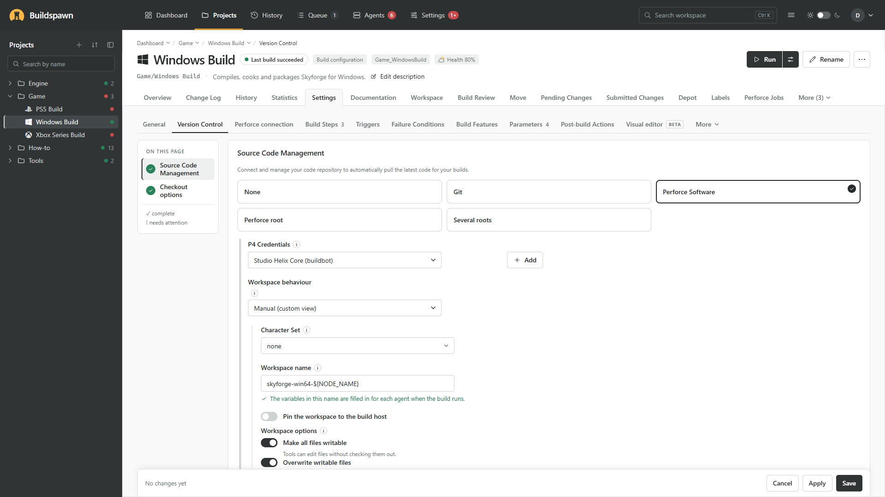

Version Control
Where a build configuration gets its sources: Git, Perforce, a Perforce root that a project shares, or several roots.
When to use it
Use this tab to say where the sources are. The page is titled Source Code Management. The card Checkout options below the form is described in Workspace options. The number beside the tab counts the roots when there are several. The details of each choice are in the Version control section.

How to set it up
- Open the build configuration and click Settings. Then click Version Control.
- Click a card: None, Git, Perforce Software, Perforce root or Several roots.
- Fill in the form that opens under the cards (see Git and Perforce).
- With Several roots each root is a card with its own checkout folder and its own polling switch. Use the arrows to change their order.
- Click Save.
Every field
| Field | What it does | Default | Example |
|---|---|---|---|
| None | The build configuration fetches no sources. Use it for builds that only run scripts. | None | - |
| Git | A Git repository, with its credential and branches. | - | https://git.studio.example/skyforge/launcher.git |
| Perforce Software | A Perforce server with its own workspace in this build configuration: P4 Credentials, Workspace behaviour (Manual, Spec File, Static, Streams or Template), Workspace name and Workspace options. | - | Workspace name skyforge-win64-${NODE_NAME} |
| Perforce root | A root that a project shares (see Perforce roots). Server, credential and workspace come from the root. | - | Main |
| Several roots | More than one root, Git or Perforce, each with a checkout folder and a polling switch. | - | Perforce game and Git scripts |
A worked example
Windows Build uses Perforce Software with the credential Studio Helix Core (buildbot), a manual workspace view of the //Skyforge/Main stream and the workspace name skyforge-win64-${NODE_NAME}. Each agent fills in its own name.
What you see when it runs
The build log starts with the checkout of each root in order. The build page lists the changes of every root. A Perforce connection tab appears next to this tab when the build configuration uses Perforce.
Problems and fixes
| Problem | What to do |
|---|---|
| A red dot on the tab | A root has a problem, for example no connection. Open the tab to see what. |
| Files land in the wrong folder | Set the checkout folder of each root when there are several. |
| The workspace name shows Unknown client | A name with variables such as ${NODE_NAME} is filled in for each agent when the build runs. The page says so. |